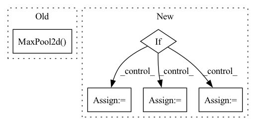

Pattern ID :28784

Before Change
// stride=1
), // output shape (out_channels, current_size, current_size)
nn.ReLU(), // activation
nn.MaxPool2d(kernel_size=2), // choose max value in 2x2 area, output shape (16, 14, 14)
))
current_size = current_size / 2
current_channels = channels[l_id]
After Change
current_size = current_size
current_channels = channels[l_id]
if self.variational:
self.fc_mu = nn.Sequential(
nn.Linear(int(current_size * current_size * current_channels), latent_dims),
)
self.fc_var = nn.Sequential(
nn.Linear(int(current_size * current_size * current_channels), latent_dims),
)
else:
self.fc = nn.Sequential(
nn.Linear(int(current_size * current_size * current_channels), latent_dims),
)
self.conv_layers = nn.Sequential(*conv_layers)
In pattern: SUPERPATTERN
Frequency: 3
Non-data size: 5
Instances
Fragment ID: 84679565
Project Name: jameschapman19/cca_zoo
Commit Name: a67b4d1253acfaa0d8f3b544104e7f329d975239
Time: 2021-02-17
Author: james.chapman.19@ucl.ac.uk
File Name: cca_zoo/deep_models.py
M Class Name: CNNEncoder
N Class Name: CNNEncoder
M Method Name: __init__(8)
N Method Name: __init__(8)
M Parent Class: BaseEncoder
N Parent Class: BaseEncoder
M File Name: cca_zoo/deep_models.py
N File Name: cca_zoo/deep_models.py
M Start Line: 116
M End Line: 154
N Start Line: 114
N End Line: 158
'>
Before Change
super(Cnn, self).__init__()
h, w, c = shape
self.conv0 = nn.Conv2d(c, 16, 5)
self.pool0 = nn.MaxPool2d(2)
self.conv1 = nn.Conv2d(16, 16, 5)
self.pool1 = nn.MaxPool2d(2)
h = ((h - 4) // 2 - 4) // 2
w = ((w - 4) // 2 - 4) // 2
After Change
cnn = []
mlp_idx = 0
for conv in hidden_sizes:
if isinstance(conv, tuple):
out_channels, kernel_size, pool_size = conv
cnn.append(nn.Conv2d(in_channels, out_channels, (kernel_size, kernel_size)))
cnn.append(nn.MaxPool2d(pool_size))
cnn.append(activation())
h = (h - kernel_size + 1) // pool_size
w = (w - kernel_size + 1) // pool_size
in_channels = out_channels
else:
break
'>
Fragment ID: 84679500
Project Name: jjccero/pbrl
Commit Name: b8f71666879a2c58594048407f06952b774e83b6
Time: 2022-04-16
Author: 1127986703@qq.com
File Name: pbrl/policy/base.py
M Class Name: Cnn
N Class Name: Cnn
M Method Name: __init__(4)
N Method Name: __init__(4)
M Parent Class: nn.Module
N Parent Class: nn.Module
M File Name: pbrl/policy/base.py
N File Name: pbrl/policy/base.py
M Start Line: 40
M End Line: 47
N Start Line: 40
N End Line: 60
'>
Before Change
self._model = nn.Sequential(
nn.Conv2d(input_channels, self.num_channels_conv, kernel_size=5),
self.activation_function(),
nn.MaxPool2d(2, 2),
nn.BatchNorm2d(self.num_channels_conv),
QConv2d(
After Change
super(LeNet, self).__init__(dataset)
self.input_channels = dataset.shape[1]
self.num_output = dataset.num_classes
if lenet_version == 0:
self._model = self.generate_quant_model("sign", "sign")
elif lenet_version == 1:
self._model = self.generate_quant_model("weightdorefa", "weightdorefa")
elif lenet_version == 2:
self._model = self.generate_quant_model("sign", "weightdorefa", weight_quant_2="sign")
elif lenet_version == 3:
self._model = self.generate_quant_model("sign", "weightdorefa")
else:
self._model = nn.Sequential(
nn.Conv2d(self.input_channels, self.num_channels_conv, kernel_size=5),
'>
Fragment ID: 84679560
Project Name: hpi-xnor/bitorch
Commit Name: 3e39cbdcc82f8070eb61e0374a208a405abbd8cb
Time: 2022-05-18
Author: christopher.aust@student.hpi.uni-potsdam.de
File Name: bitorch/models/lenet.py
M Class Name: LeNet
N Class Name: LeNet
M Method Name: __init__(3)
N Method Name: __init__(3)
M Parent Class: Model
N Parent Class: Model
M File Name: bitorch/models/lenet.py
N File Name: bitorch/models/lenet.py
M Start Line: 24
M End Line: 74
N Start Line: 57
N End Line: 88